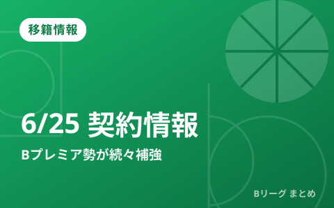

【6月25日の契約情報まとめ】Bプレミア参戦クラブが新戦力を続々獲得、琉球から宇都宮への移籍も

オフシーズンのB.LEAGUEでは、各クラブの契約・移籍の動きが活発になっています。6月25日には、Bプレミア（B.LEAGUE PREMIER）参戦に向けたクラブを中心に新戦力獲得の発表が相次ぎ、琉球から宇都宮への移籍も伝えられました。最新の契約情報と、オフの移籍の“見方”をあわせて整理します。
▲ 関連動画：B.LEAGUE 公式ハイライト（B.LEAGUE公式・YouTube）
この日の主な動き
新シーズン、そしてBプレミア参戦に向けて、各クラブが補強を加速させています。6月25日も新加入選手の発表が続き、注目の動きとして琉球から宇都宮への移籍が報じられました。強豪クラブ同士の選手の動きは、来季の勢力図にも影響する可能性があります。クラブごとの新加入・契約更新の一覧は、確定情報をもとに順次追記していきます。
「Bプレミア」とは？
B.LEAGUEは、より高い競技性と事業規模を備えた新たなトップカテゴリ「B.LEAGUE PREMIER（Bプレミア）」への移行を進めてきました。参戦するクラブは、観客動員やアリーナ、経営などの基準を満たす必要があり、各クラブは戦力強化にも一層力を入れています。そのため、オフの補強合戦は例年以上に注目度が高まっています。
オフの移籍情報の“見方”
オフの選手の動きには、いくつかのパターンがあります。代表的なものを押さえておくと、ニュースが追いやすくなります。
| 種類 | 意味 |
|---|---|
| 新加入 | 他クラブや海外などから新たに加入 |
| 契約更新 | 所属クラブと再契約して残留 |
| 退団 | クラブを離れる（移籍先未定の場合も） |
| 特別指定/育成→トップ | 若手が正式なトップ契約に昇格 |
当サイトでは、こうした動きをクラブ別・日付別に整理し、「どの選手がどこへ動いたか」をひと目で追えるようにしていきます。
まとめ
新シーズンに向けた編成は、クラブの戦力を占う重要な情報です。とくにBプレミア参戦クラブの補強は、来季の優勝争いにも直結します。日々の契約発表は、本サイトの移籍情報カテゴリでまとめて更新していきます。
Q. 移籍情報はどこが一番正確？
A. 各クラブの公式リリースが一次情報です。本サイトは報道をもとに見やすく整理する役割で、最終確認は公式でお願いします。
出典：バスケットボールキング「【6月25日の契約情報】琉球から宇都宮へ移籍…Bプレミア参戦クラブが新戦力を続々獲得」（2026年6月25日）
https://basketballking.jp/news/japan/20260625/620560.html